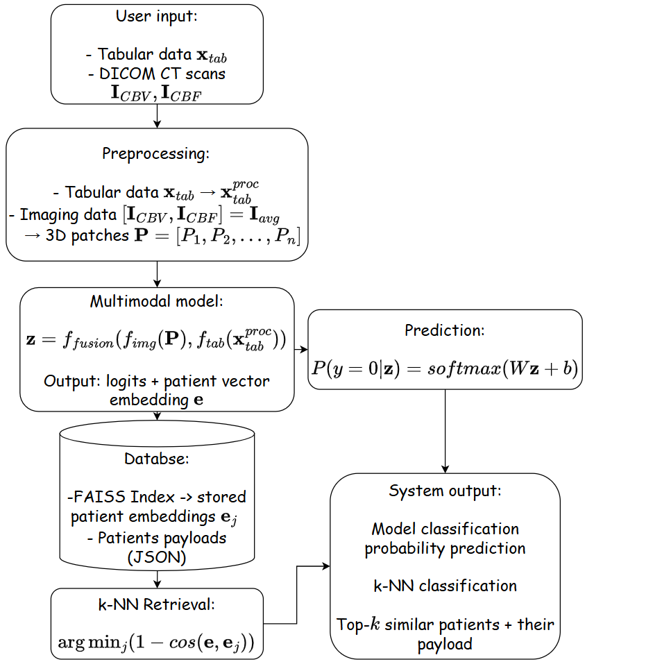
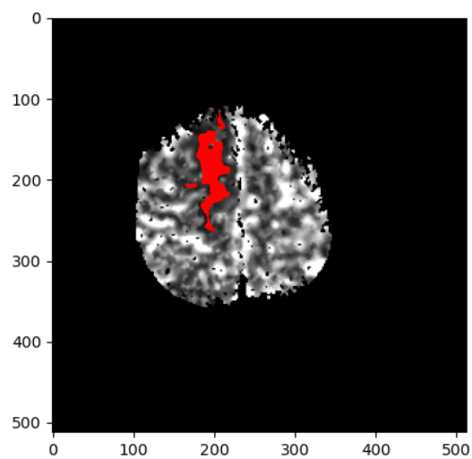
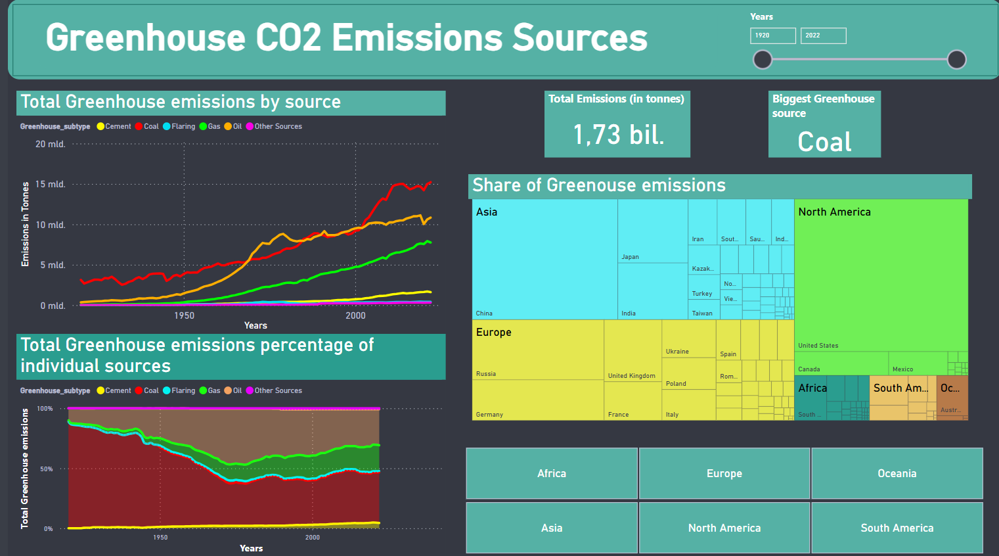

Projects
Selected work from research and industry

Academic
Master's Thesis
Multimodal vector data representations for personalized medicine and stroke outcome prediction.

Academic
Bachelor's Thesis
Deep learning for brain CT image segmentation in stroke patients.

Professional
CO₂ & Climate Change Dashboard
Interactive PowerBI report on global emissions and climate data.